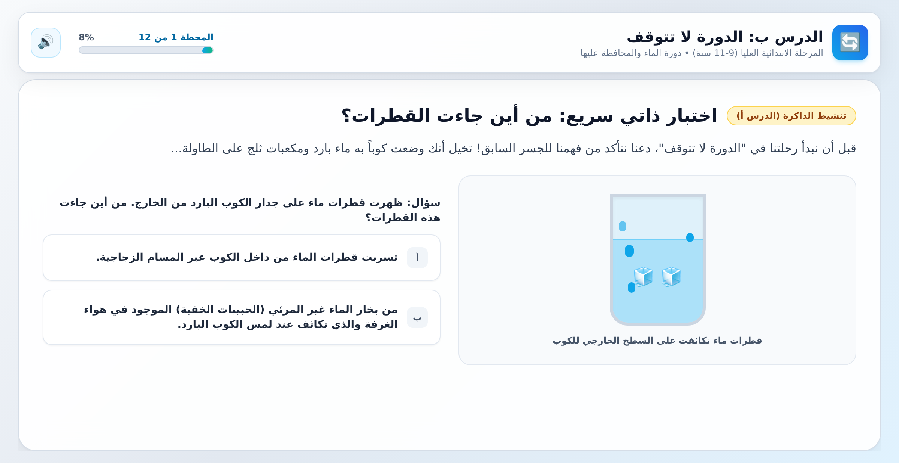

Learn by building. Real science, real hands, real understanding.
01 · The Idea
Learn.io is a learning platform where people master science and engineering by doing — solving interactive challenges on screen the way Brilliant.org does, then building real physical projects with their hands the way CrunchLabs does. It merges both worlds into one guided journey, designed on top of cognitive science (how humans actually learn and retain) and serious UI/UX craft (how to make hard things feel engaging, not gamified fluff).
The first track: robotics and electronics, delivered through shipped project kits paired with the digital platform. Starting market: MENA, Arabic-first.
02 · The Problem
03 · The Solution
Short, interactive lessons where the learner solves problems — not watches videos. Electronics and robotics taught through manipulation, prediction, and immediate feedback: simulate the circuit, predict the output, fix the bug, then see why.
Project kits shipped to the learner, synchronized with the digital track. Every kit builds on the concepts just mastered on screen. Finish the digital module on motor drivers, then wire and program a real one.
The screen teaches why; the kit proves it in the learner's hands. Neither layer alone is new — the tight loop between them is the product.
04 · Who It's For
High-school students who want real engineering skills beyond a curriculum that rarely offers hands-on work. Motivated by university preparation, competitions, and genuine curiosity. Purchase decision often involves parents.
Engineering students whose degrees are theory-heavy; self-learners and career-switchers moving toward embedded systems, robotics, and hardware; hobbyists who want structure instead of scattered YouTube tutorials.
Younger learners (with adapted tracks), schools and STEM clubs (institutional licensing), and makerspaces.
05 · First Track
Robotics is the ideal starting point because it is inherently physical, visibly rewarding, and layered — it naturally teaches electronics, programming, mechanics, and systems thinking in one arc.
| Stage | Digital layer | Physical kit |
|---|---|---|
| Foundations | Electricity, circuits, components — interactive simulations | First circuits kit: breadboard, sensors, real measurements |
| Control | Microcontrollers, logic, programming fundamentals | MCU kit: inputs, outputs, first programs on real hardware |
| Systems | Motors, drivers, power, signal | Actuator kit: motion, control loops |
| Integration | Robot architecture, debugging, design thinking | Capstone robot: designed and built, not just assembled |
Each digital module ends with a mastery check; each kit ends with an open-ended challenge that requires understanding, not instruction-following. (Illustrative arc — to be developed with curriculum design.)
06 · Market Snapshot
| Interactive digital | Physical kits | Real fundamentals | Arabic-first | |
|---|---|---|---|---|
| Brilliant.org | ✔ | ✘ | ✔ | ✘ |
| CrunchLabs | ✘ | ✔ | partial | ✘ |
| Generic STEM kits | ✘ | ✔ | ✘ | rare |
| YouTube / MOOCs | ✘ | ✘ | varies | limited |
| Learn.io | ✔ | ✔ | ✔ | ✔ |
Figures to be validated with dedicated research — directional only.
07 · Business Model
Key questions to resolve: kit logistics and shipping costs across MENA, local payment preferences (subscription resistance, cash-on-delivery culture), and unit economics of hardware at low initial volume.
08 · Design & Learning Principles
09 · Roadmap
Define curriculum architecture for the robotics track. Validate demand (landing page, community, interviews with target learners in MENA). Resolve business model and kit logistics questions.
Build the first interactive digital modules (electronics foundations). Test with a pilot cohort; measure completion and retention against cognitive-science benchmarks.
Design and produce the foundations kit. Run the full digital + physical loop with pilot users. Iterate.
Full first track live in Arabic. Paid launch in initial market(s). Begin second track planning.
10 · Risks & Open Questions
11 · Example in Action
An early prototype of the digital layer: an interactive Arabic lesson on the water cycle for upper-primary learners. It opens by activating prior knowledge with a prediction question — no video, no lecture — exactly the active-learning loop the platform is built on.

Lesson B — "The cycle never stops" (دورة الماء): warm-up self-check with immediate feedback, progress tracking, and deliberate, working-memory-friendly pacing.
12 · Contact